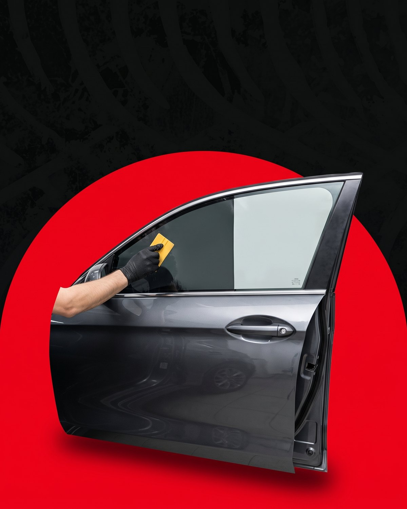
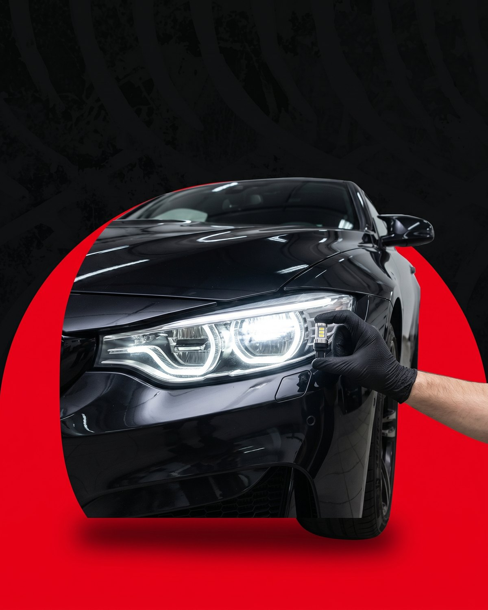
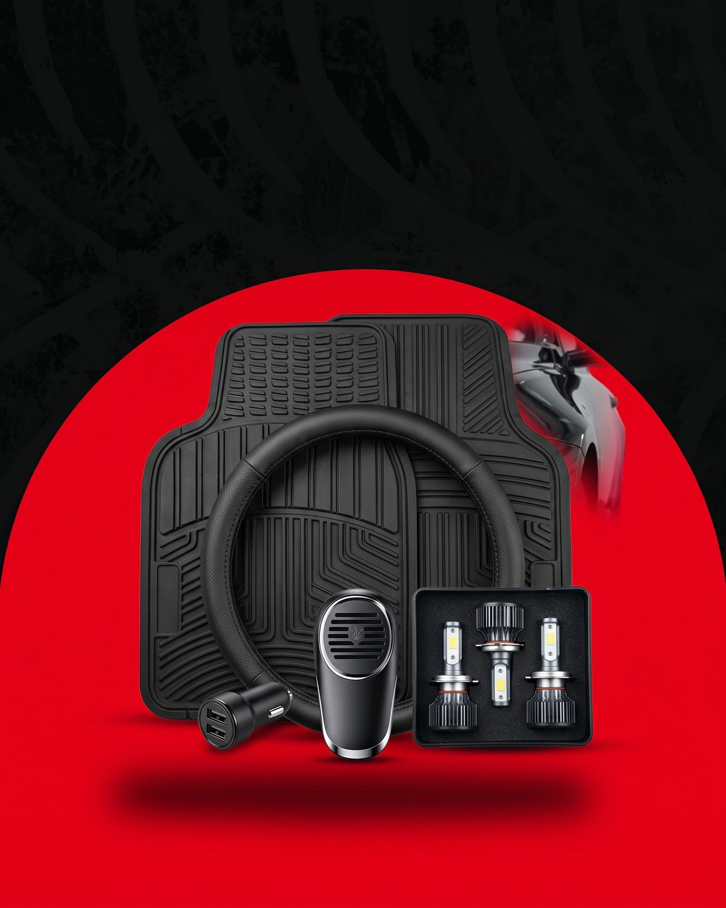

Inicio / Estética y personalización
Le damos identidad propia a tu vehículo: polarizado, iluminación y accesorios. Todo con colocación prolija y materiales que aguantan el uso diario.
Más privacidad, confort y protección para cada viaje. Colocamos película de calidad, sin burbujas ni arrugas, respetando los porcentajes permitidos para circular.

¿Buscás ploteo o wrapping? Mirá todo lo que hacemos →
Instalación de LED y lámparas de mayor rendimiento, con la regulación correcta del haz para que ilumines más sin encandilar al que viene de frente.

Somos también tienda de accesorios: productos de mantenimiento, aditivos y todo lo que tu vehículo necesita para andar y verse mejor. Consultanos por lo que estés buscando.

Te asesoramos según lo permitido para circular y según lo que busques: privacidad, control de calor o ambas cosas.
Un auto completo se hace en el día. Te recomendamos no bajar los vidrios durante las primeras 48 horas para que la película asiente bien.
Usamos lámparas homologadas y regulamos el haz para que no encandilen. Te asesoramos según tu modelo y lo que exige la VTV.
Sí. Podés pasar por el taller a comprar productos de mantenimiento, aditivos y accesorios, con o sin colocación.
Contanos qué tenés en mente y te pasamos opciones y precios por WhatsApp.
Pedir turno por WhatsApp